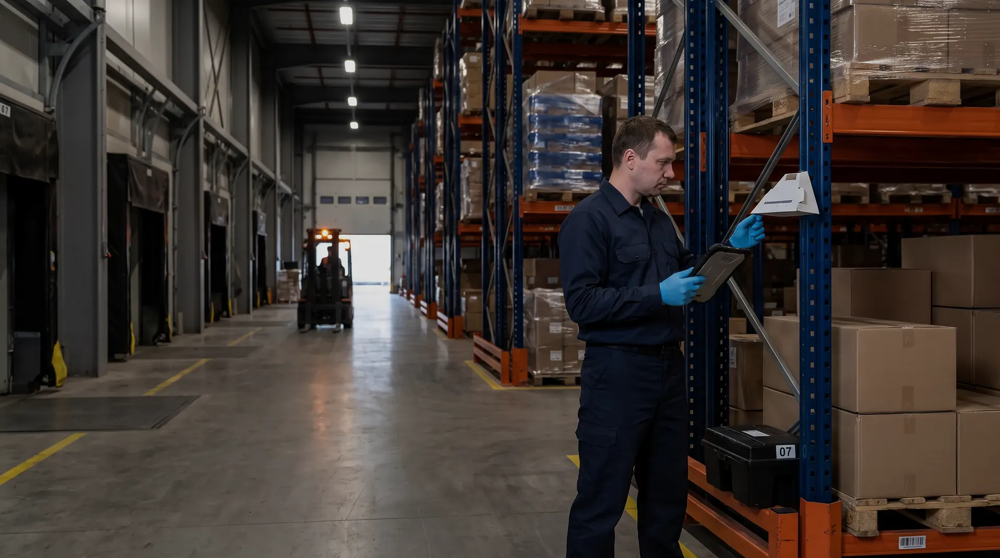
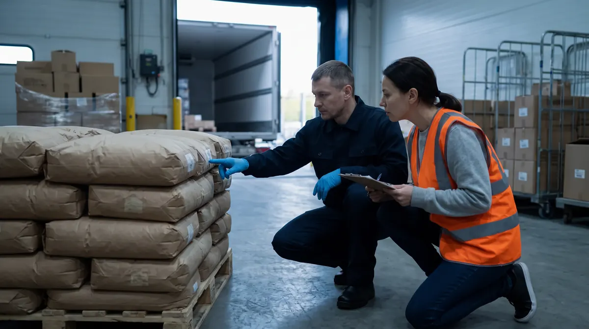
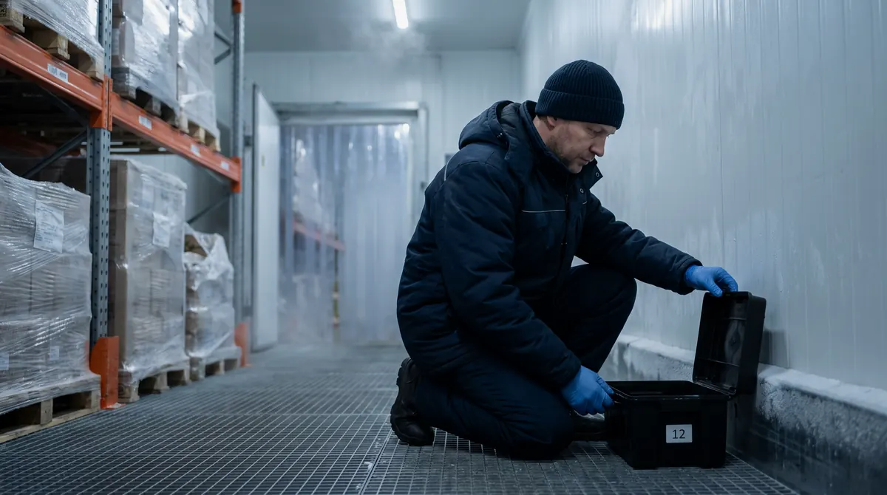
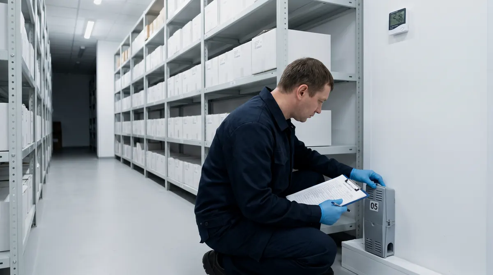
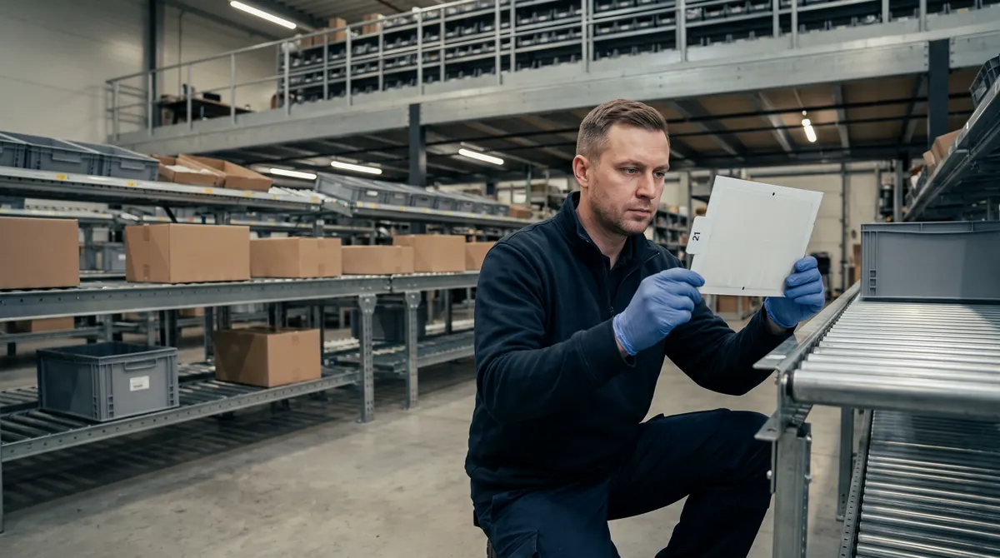
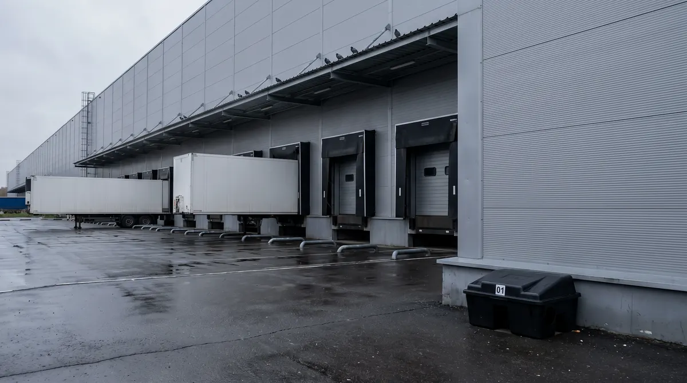
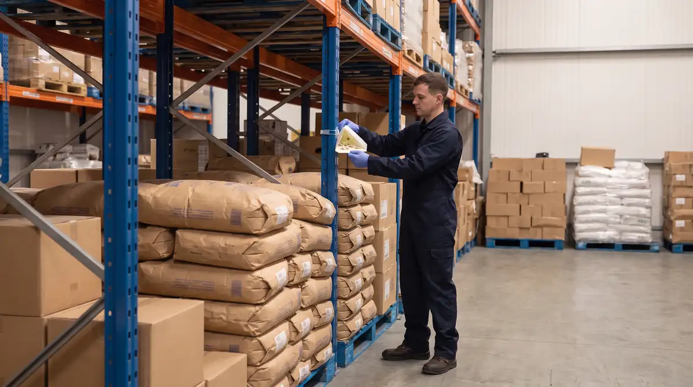
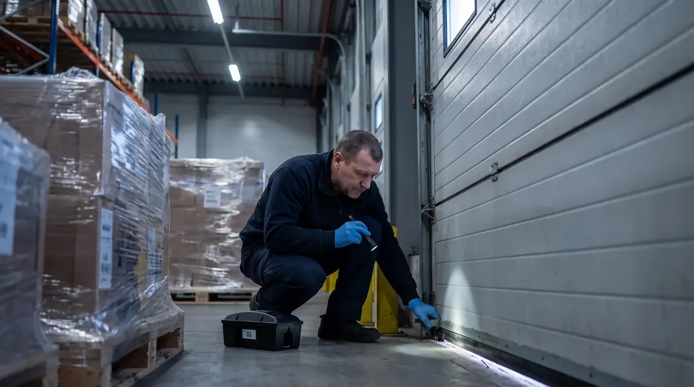
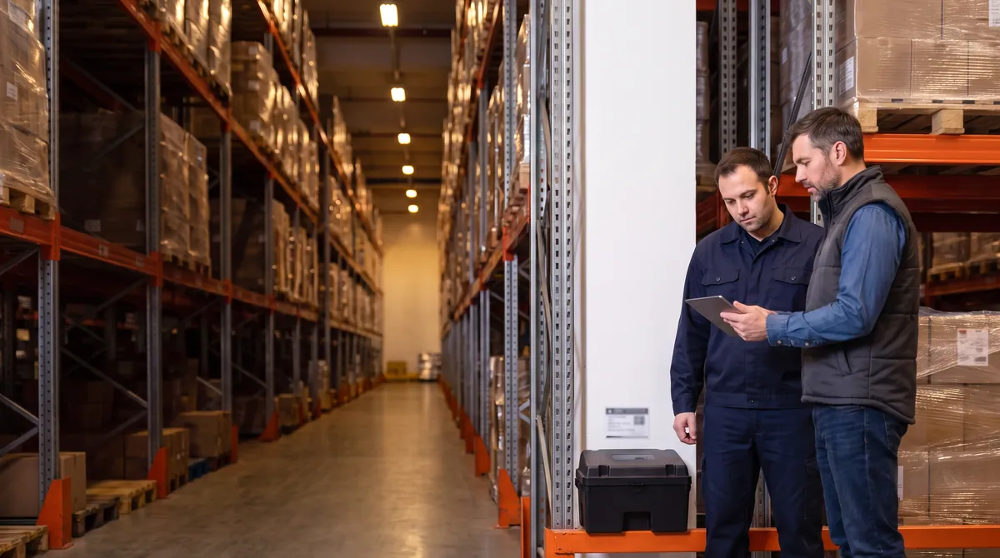

Непищевые товары
Сухие склады и РЦ
Грызуны портят упаковку, кабели и сам товар, а помёт и погрызы становятся поводом для претензий клиента. Основной барьер — периметр, доки и ворота, внутри — ловушки у стен и оснований стеллажей.

Обслуживаем сухие, продуктовые, холодильные и фармацевтические склады, распределительные центры и фулфилмент в Москве и области. Обследование склада и расчёт программы — бесплатно.
Внеплановый выезд по сигналу — в течение 3 часов, 24/7
0 из 5
Если хотя бы одного пункта нет, вредители будут возвращаться, а у инспектора или аудитора клиента появятся замечания. На бесплатном выезде покажем, что доработать.
Заказать бесплатное обследованиеВредители заходят на склад через конкретные места: ворота, приёмку, площадку отходов, бытовые помещения. Для каждой зоны подбираем свой тип точек контроля и свои действия для склада.
Склады пищевой продукции, таможенные терминалы и объекты транспортной инфраструктуры прямо названы в перечне объектов особого эпидемиологического значения (п. 98 СанПиН 3.3686-21). Фармацевтические склады проверяют по правилам дистрибьюторской практики, логистических операторов — по стандартам их заказчиков.
Грызуны портят упаковку, кабели и сам товар, а помёт и погрызы становятся поводом для претензий клиента. Основной барьер — периметр, доки и ворота, внутри — ловушки у стен и оснований стеллажей.

Объект особого эпидемиологического значения: обследование на насекомых — не реже 2 раз в месяц, дератизация — по результатам ежемесячной оценки. Внутри — только ловушки без яда, на приёмке — осмотр партий.

Мыши держатся у тёплых технических зон, компрессорных и тамбуров и могут жить в утеплителе панелей. Контролируем тамбуры, примыкания панелей, кабельные вводы и пространство вокруг камер.

Правила надлежащей дистрибьюторской практики ЕАЭС (п. 36) требуют защищать помещения от насекомых, грызунов и других животных и вести программу профилактического контроля вредителей. Внутри — только ловушки без яда.

Тысячи товарных позиций, короба и поток возвратов. Моль и жуки приходят с продуктами и кормами для животных, тараканы — в бытовых зонах. Ведём контроль по зонам и товарным группам.

Склад отвечает перед поклажедателями за сохранность товара. Отчёт ведём по зонам склада, по согласованию — отдельно по клиентам, с фото находок. Таможенные терминалы входят в перечень п. 98 СанПиН.
У каждого вредителя свои маршруты и признаки. Точки контроля подбираем под вредителя и зону, а не раскладываем одно средство по всему складу.

Приходит с соседних участков и от мусорных контейнеров, роет норы у фундамента и пролезает под воротами. Прогрызает упаковку, утеплитель и изоляцию кабелей.

Завозится с паллетами и гофротарой, живёт в нижних ярусах стеллажей и в коробах. Помёт и погрызы на упаковке — повод для претензии и списания партии.

Заводятся в муке, крупах, кормах для животных, орехах, сухофруктах, какао и табаке и переходят на соседние партии. Отслеживаем феромонными ловушками по рядам и ищем партию-источник.

Живут в комнатах приёма пищи, у кофемашин и холодильников, в душевых и у мусорных зон, переносятся в коробах. Контролируем клеевыми ловушками, обрабатываем точечно по результатам.

Залетают через открытые ворота и от площадки отходов, особенно летом. Световые ловушки ставим внутри и вдали от ворот, чтобы не приманивать насекомых с улицы.

Залетают через ворота и проёмы, садятся на фермы и стеллажи, пачкают помётом товар и технику. Отмечаем места присады и гнездования и даём рекомендации: сетки, закрытие проёмов, противоприсадочные системы.
Аудиторы IFS Logistics и торговых сетей смотрят, кто за что отвечает. Поэтому в программе разделяем работу подрядчика и действия склада.

Склад, который работает в несколько смен, нельзя закрыть на обработку. Поэтому маршрут, время визита и способ обработки согласуем при запуске.
Обходим точки по схеме и не перекрываем проезды техники. Ворота и доки проверяем, когда они свободны.
Если обработка нужна, проводим её без людей и открытого товара в зоне. Пищевую продукцию на время дезинсекции убирают или герметично упаковывают (п. 105 СанПиН 3.3686-21).
Проходим вводный инструктаж склада, работаем в СИЗ и соблюдаем правила движения техники на территории.
Заранее сообщаем дату, время и меры предосторожности, а руководитель склада доводит их до сотрудников (п. 102 СанПиН 3.3686-21).
Пять шагов, после которых у склада есть рабочая схема защиты и комплект документов для проверки.
Инженер обходит все зоны и территорию вместе с вашим ответственным: ищет щели под воротами, изношенные уплотнители, норы, следы грызунов и насекомых, места присады птиц.

Готовим программу пест-контроля, план-схему точек по зонам и проект договора с ценой — в течение 1 часа после осмотра.

Ставим контейнеры КИК снаружи, ловушки внутри, феромонные и световые ловушки по зонам. Исправные станции прежнего подрядчика осматриваем, маркируем и принимаем на обслуживание бесплатно.

Проверяем все точки по маршруту, учитываем находки, меняем расходники и заполняем журнал. На складах пищевой продукции обследование на насекомых — не реже 2 раз в месяц.
Раз в месяц — отчёт по зонам с динамикой и фото, список щелей и проёмов для службы эксплуатации. По сигналу склада выезжаем внепланово в течение 3 часов.

На проверке смотрят не только договор, но и схему точек, журнал по каждой точке, отчёты и документы на средства.
| Норматив или стандарт | Что требует от склада | Кто проверяет |
|---|---|---|
| СанПиН 3.3686-21 | Склады пищевой продукции, таможенные терминалы, объекты транспортной инфраструктуры, контейнеры и спецавтотранспорт — в перечне п. 98. Обследование на насекомых не реже 2 раз в месяц (п. 101), дератизация по ежемесячной оценке (п. 110), приманки — в закрывающихся пронумерованных контейнерах, отдельно от пищевой продукции и кормов (п. 120) | Роспотребнадзор |
| МР 3.5.3.0374-25 | Методические рекомендации по дератизации 2025 года: обследование, обработка и оценка эффективности; на складах — следовые площадки и неотравленные приманки, подтверждение находок фотофиксацией | Роспотребнадзор, служба качества |
| ТР ТС 021/2011, ст. 17 | Хранение и перевозка пищевой продукции в условиях, сохраняющих её безопасность; грузовые отделения и контейнеры защищают продукцию от проникновения грызунов и насекомых | Роспотребнадзор, производители-поклажедатели |
| Правила дистрибьюторской практики ЕАЭС, п. 36 | Помещения защищены от проникновения насекомых, грызунов и других животных; на складе есть программа профилактического контроля вредителей | Росздравнадзор, аудиторы GDP |
| IFS Logistics, BRCGS Storage & Distribution | Документированная программа контроля вредителей на основе оценки рисков, мониторинг, анализ трендов и корректирующие действия | Сертификационные аудиторы, торговые сети |
Зоны склада, целевые вредители, кратность визитов и время реагирования — 3 часа по сигналу.
Чертёж склада и территории со сквозной нумерацией КИК, ловушек, феромонных и световых ловушек.
Результат по каждой точке после каждого визита: состояние, находки, замена расходников.
Акты обследования и выполненных работ на бумаге или по ЭДО, с НДС и без НДС.
Выписка из реестра лицензий № Л064-00111-77/01942445, СГР и паспорта безопасности средств.
Находки и динамика по зонам, фото и список корректирующих действий для службы эксплуатации.
Через месяц аудит по IFS Logistics, а от прежнего подрядчика остались только акты — без схемы точек и журнала по каждой точке.
Клиент вернул паллету с погрызенной упаковкой и спрашивает, откуда грызуны и что склад с этим делает.
В зоне кормов для животных летает моль. Боимся, что она перейдёт на крупы и сухофрукты в соседних рядах.
Голуби сидят на навесе над доками и залетают внутрь, помёт — на паллетах и погрузчиках.
Запускаем новый склад и хотим, чтобы точки контроля и документы были готовы до приёмки первой партии.
Меняем подрядчика, но не хотим разрыва в журналах: через два месяца плановая проверка.
Это типовые рабочие ситуации на складах, а не описания конкретных клиентов. На бесплатном выезде инженер осмотрит ваш склад и покажет решение до подписания договора.
Заказать обследованиеЦена зависит от площади и числа корпусов, количества ворот и рамп, товара на хранении и кратности визитов. Точный расчёт со схемой точек присылаем в течение 1 часа после бесплатного осмотра.
| Объект / работа | Что входит в обслуживание | Ориентир |
|---|---|---|
| Дератизация склада до 1 000 м² | Внешний и внутренний контуры защиты, контроль ворот и рамп, 1–2 визита в месяц, журнал и акты | от 4 500 ₽/мес |
| Плановая дезинсекция склада | Обследования 1–2 раза в месяц, обслуживание клеевых и световых ловушек, журнал и отчётность | от 4 500 ₽/мес |
| Склад от 1 000 м², РЦ, фулфилмент, холодильный комплекс | Комплексная программа: грызуны, насекомые и вредители запасов, схема по зонам, ежемесячный отчёт | после бесплатного выезда |
| Разовая истребительная обработка | Подавление очага грызунов или насекомых в складских помещениях | от 3 500 ₽ |
| Контейнеры КИК и ловушки | Первичное оснащение склада станциями контроля и ловушками | от 600 ₽ за точку |
Плановые визиты по графику, проверка всех точек, расходники при обходах, ведение журнала, план-схема, акты, ежемесячный отчёт и внеплановые выезды в течение 3 часов.
Площадь и число корпусов, количество ворот и рамп, товар на хранении (пищевой, непищевой, лекарства), кратность визитов по СанПиН и требования ваших аудиторов.
Проект договора с расчётом — за 1 час после осмотра. Работаем с НДС и без НДС, подписываем договор и акты через ЭДО или на бумаге. Срок договора — 12 месяцев с пролонгацией.
По СанПиН 3.3686-21 склады пищевой продукции, таможенные терминалы и объекты транспортной инфраструктуры относятся к объектам особого эпидемиологического значения (п. 98). На них обследование на насекомых проводят не реже 2 раз в месяц (п. 101), а дератизацию — по результатам ежемесячной оценки (п. 110). На других объектах обследование на насекомых — не реже 1 раза в месяц. На практике визиты планируем 1–2 раза в месяц и добавляем внеплановые по сигналу склада.
По п. 120 СанПиН 3.3686-21 приманки с антикоагулянтами размещают только в закрывающихся пронумерованных контейнерах, в недоступных для детей и животных местах и отдельно от пищевой продукции и кормов. Поэтому контейнеры с приманкой ставим снаружи по периметру, а в зонах хранения продуктов используем механические и клеевые ловушки без яда.
Нет. Плановые визиты проходят при работающем складе: инженер обходит точки по маршруту и не перекрывает проезды. Обработку, если она нужна, проводим в согласованное окно, когда в зоне нет людей и открытой продукции. Пищевую продукцию на время дезинсекции убирают или герметично упаковывают — это требование п. 105 СанПиН 3.3686-21.
Защиту строят снаружи внутрь. Первый барьер — периметр и площадка ТКО: закреплённые контейнеры с приманкой вдоль стен. Второй — доки и ворота: целые щётки и уплотнители, закрытые без погрузки ворота, ловушки у проёмов изнутри. Третий — внутренние зоны: ловушки у стен и оснований стеллажей, проход вдоль стен для осмотра и осмотр паллет на приёмке. Щели и проёмы, которые находим, передаём списком службе эксплуатации.
Сначала найти источник: развешиваем феромонные ловушки по рядам и смотрим, где улов выше, затем осматриваем партии в этой зоне. Заражённую партию изолируют, просыпи убирают, товар отгружают по принципу «первым пришёл — первым ушёл». Обработку применяем только по результатам мониторинга и с защитой продукции.
Голуби и воробьи залетают через открытые ворота и проёмы и садятся на фермы, навесы и верхние ярусы стеллажей. Мы осматриваем кровлю и навесы, отмечаем места присады и гнездования на схеме и даём рекомендации: какие проёмы закрыть, где нужны сетки и противоприсадочные системы.
Договор и программа пест-контроля, план-схема точек с нумерацией, журнал с результатами по каждой точке, акты выполненных работ, ежемесячные отчёты по зонам, копии СГР и паспортов безопасности средств и выписка из реестра лицензий. Эти документы запрашивают Роспотребнадзор, аудиторы IFS Logistics и BRCGS и торговые сети.
Правила надлежащей дистрибьюторской практики ЕАЭС (п. 36) требуют, чтобы помещения были защищены от проникновения насекомых, грызунов и других животных и чтобы на складе действовала программа профилактического контроля вредителей. На фармскладах внутри используем только ловушки без яда и ведём записи по каждой точке.
Да. Для 3PL-операторов и складов ответственного хранения ведём отчёт по зонам склада, а по согласованию — отдельно по клиентам, с фото находок. Такой отчёт можно передать поклажедателю или его аудитору.
Дератизация склада до 1 000 м² — от 4 500 ₽ в месяц, плановая дезинсекция склада — от 4 500 ₽ в месяц. Для складов больше 1 000 м², РЦ, фулфилмента и холодильных комплексов считаем комплексную программу после бесплатного обследования; расчёт со схемой точек присылаем в течение 1 часа после осмотра.
Разовый выезд или регулярная защита объекта по договору. Начальные цены для организаций и ИП в Москве и Московской области.
Мониторинг и защита объекта по графику, журнал и акты.
Тараканы, муравьи, мухи и другие насекомые.
Борьба с крысами и мышами на вашем объекте.
Грызуны и насекомые по одному договору.
Начальные цены на работы. Итоговую стоимость согласуем до начала работ после обследования: учтём площадь, состояние объекта, объём работ и периодичность обслуживания.
Обследование и расчёт — 0 ₽Также: разработка ППК · документы для Роспотребнадзора · договор на обслуживание
Осмотрим объект и предложим подходящий состав работ, без лишних услуг.
Инженер приедет на склад, осмотрит территорию, доки, зоны хранения и бытовые помещения, найдёт пути проникновения вредителей и подготовит расчёт программы со схемой точек. Выезд ни к чему не обязывает.